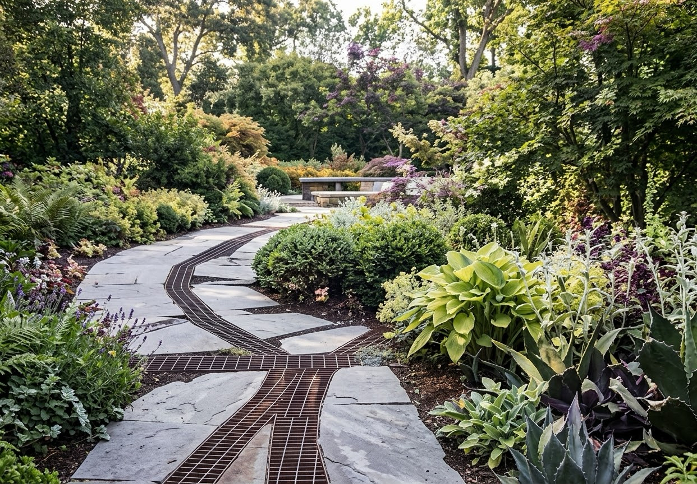
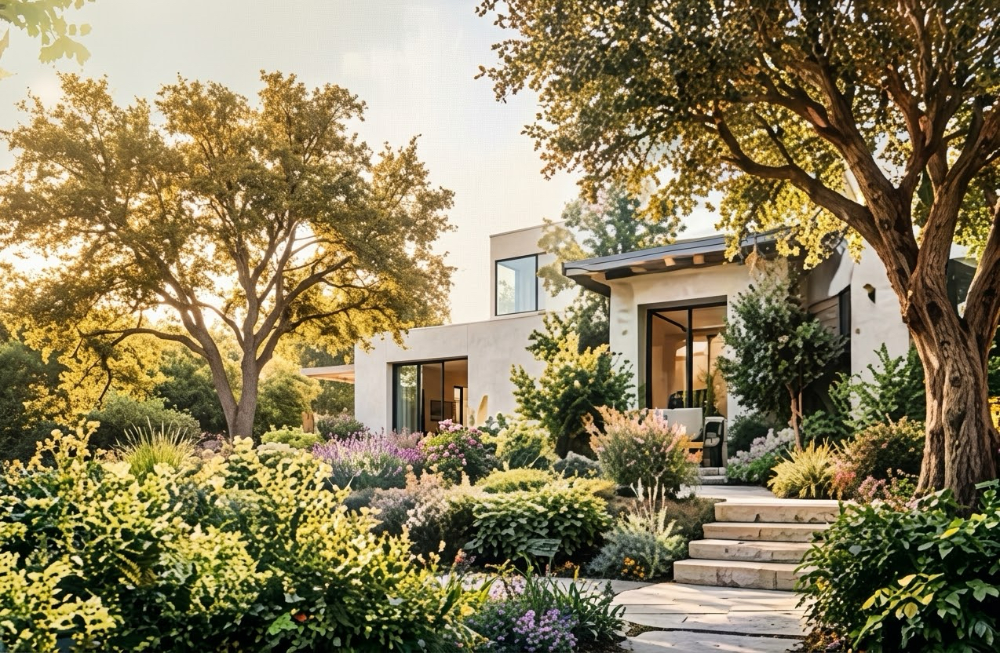
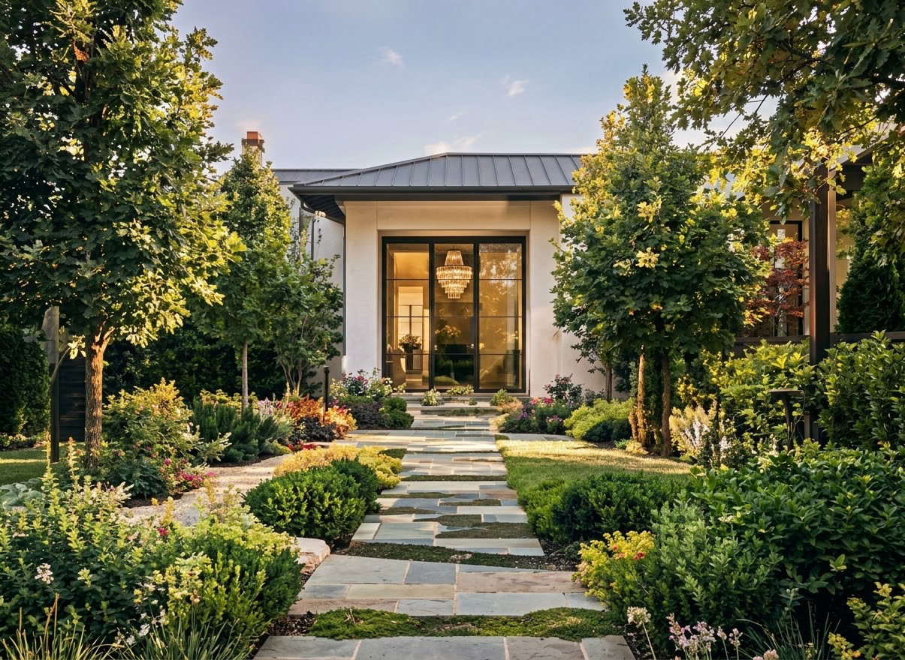

Landscape design
A measured survey, a planting plan, hardscape and lighting layouts, and a drawing set a builder can actually price. Delivered whether or not you build it with us.

Gardens drawn around how a family actually uses a property — where the sun lands at six, where the children run, and what the place should look like in ten years.
Most clients start with a drawing. Some already have one. A few just need the garden they have to stop fighting them.
A measured survey, a planting plan, hardscape and lighting layouts, and a drawing set a builder can actually price. Delivered whether or not you build it with us.
Grading, stone, irrigation, lighting and planting, run by the person who drew it. One schedule, one point of contact, one crew on site.
Pruning at the right time of year rather than the convenient one. The difference between a garden that matures and one that slowly reverts.
Roughly four to nine months for a full garden, depending on scope and season. You will know which stage you are in at all times.
Ninety minutes on the property. Sun, drainage, access, what you love, what you avoid, and what the budget needs to cover.
A sketch plan, reference imagery, and a written range. No construction drawings yet — this is where we agree the direction.
Planting schedule, hardscape detail, lighting and irrigation. Enough for permits, enough for a contractor to price honestly.
Staged so the property stays usable. Weekly photo updates even when nothing visible has changed.
We return at three, six and twelve months. Plants get replaced under warranty if they fail to establish.
Each of these started as a sketch on a site visit. Illustrative projects for this concept.



Three levels cut into a slope, olive and lavender, lit for evening use.
A shaded 40 m² square turned into the most-used room of the house.
Regraded path, structural hedging, and a front door you can find after dark.
Gardens do not fail in the first year. They fail in the third, when nobody is pruning for shape any more.
From 180 / visit · illustrative
From 340 / month · illustrative
By arrangement · illustrative
Design is quoted separately from build, as a fixed fee based on property size and scope. You own the drawings either way — there is no obligation to build with us.
Often. A large share of projects are renovations rather than blank sites, and an honest assessment of what should stay is part of the first visit.
Roughly thirty miles for design and build, a little less for ongoing care, because a care plan only works if the crew can realistically get there.
Yes, and it helps. A real build lets you attach property photos, the address and your priorities to the enquiry so the first visit starts informed.
Design work runs year round. Planting is best in autumn and early spring, so a drawing finished in summer usually goes in the ground that autumn.
Mon–Fri 7:30am–5:00pm
Saturday by appointment
Sunday closed
1180 Ridgeline Road
Your City, SC 29526
Visits by appointment
(555) 014-8890
studio@fieldandform.example
Estimates within 3 business days
Photo uploads on the enquiry form, a filterable project archive, care-plan signup, and automatic reminders before each seasonal visit.
Large photography, a clear process, and an enquiry form that collects the property details before the first visit.
Field & Form is an original website concept created by NextDay Digital to demonstrate layout, typography and conversion flow for this industry. The business, staff, hours, address, telephone number, prices and reviews shown are invented placeholders. Not a real business, client project or endorsement. Your site would use your own branding, photography and approved content.